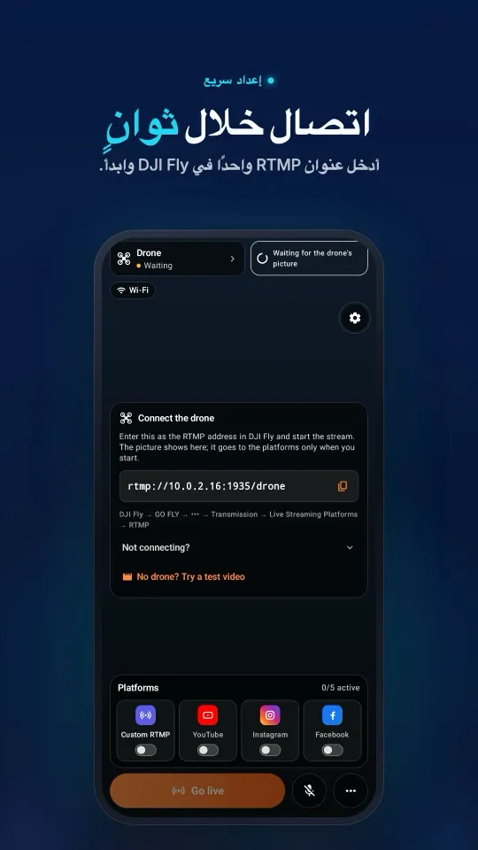
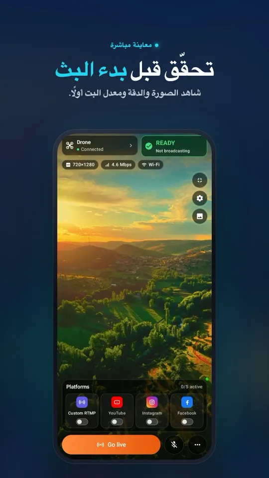
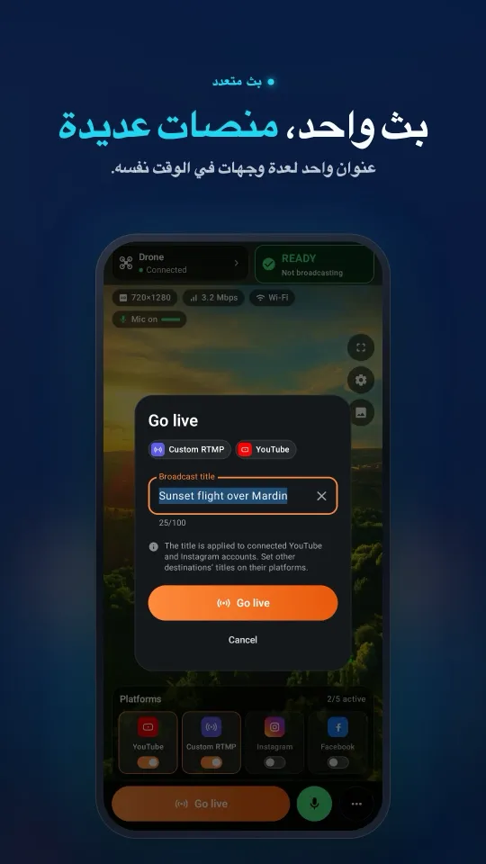
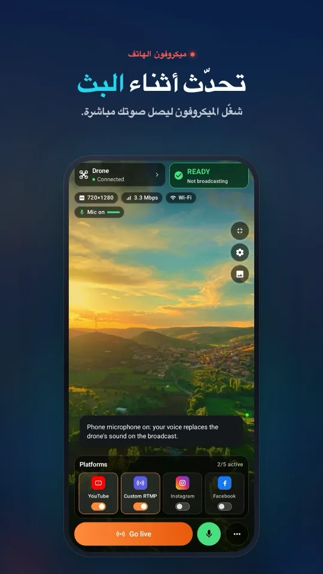
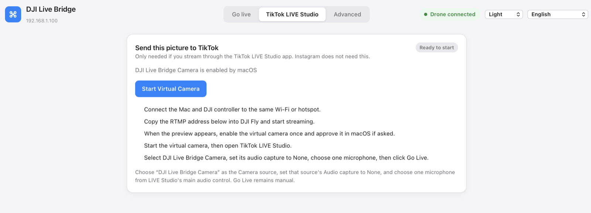
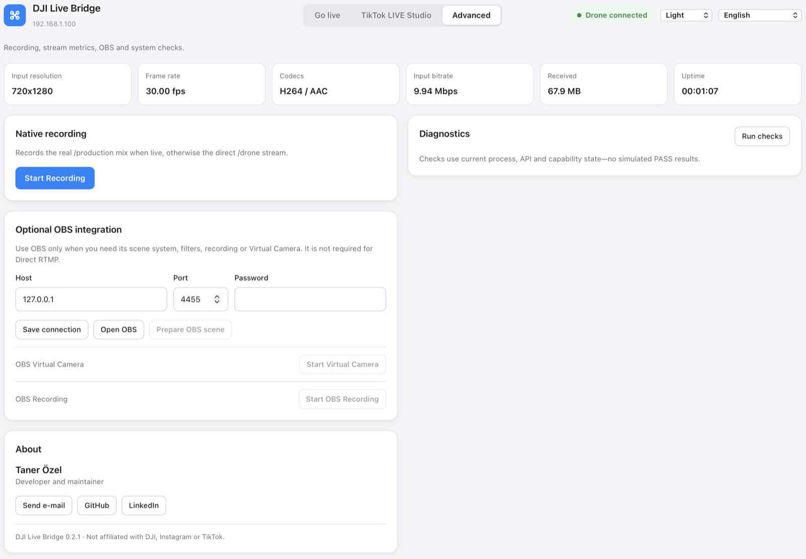
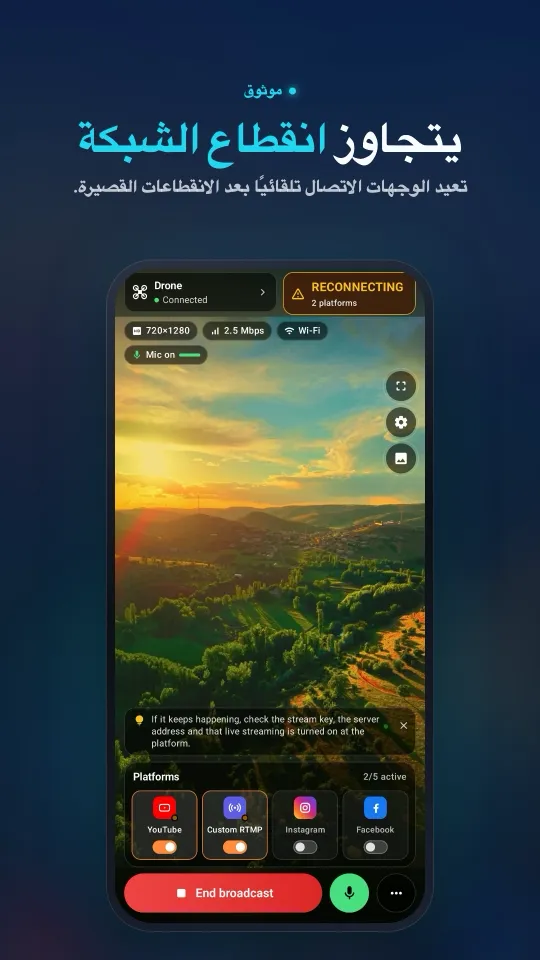

حوّل درون DJI إلى كاميرا ويب لحاسوبك
لا يقتصر Stream My Drone على إعادة البث. فـالكاميرا الافتراضية فيه تسلّم الصورة الحية من DJI Fly إلى حاسوبك ككاميرا عادية اسمها Stream My Drone Camera، فيستطيع أي تطبيق فيه قائمة كاميرات — TikTok LIVE Studio و OBS و Zoom و Google Meet و Microsoft Teams — أن يعرض ما يراه الدرون. بلا مفتاح بث، وبلا حساب بث.
باختصار
- يضيف Stream My Drone إلى حاسوبك كاميرا اسمها Stream My Drone Camera تعرض الصورة الحية من الدرون.
- يستطيع استخدامها أي تطبيق يتيح لك اختيار الكاميرا: TikTok LIVE Studio أو OBS أو Zoom أو Google Meet أو Microsoft Teams أو استوديو يعمل في المتصفح.
- لا حاجة إلى مفتاح بث ولا إلى حساب على أي منصة — الدرون يصبح ببساطة كاميرا.
- الكاميرا عمودية، 1080×1920 بمعدل 30 إطارًا في الثانية، وتنقل الفيديو فقط؛ وتختار الميكروفون في التطبيق الذي يستخدمها.
- لمكالمات الفيديو الأفقية، مرّر الدرون عبر OBS بالتخطيط الأفقي 16:9 واستخدم OBS Virtual Camera.
ماذا تفعل الكاميرا الافتراضية
عادةً تذهب الصورة الحية من الدرون إلى منصة بث. أما الكاميرا الافتراضية فتسلك طريقًا آخر: يرسل DJI Fly الصورة عبر RTMP إلى Stream My Drone على حاسوبك، ويسلّمها التطبيق إلى نظام التشغيل ككاميرا. وبالنسبة إلى كل تطبيق آخر، يبدو الدرون ككاميرا ويب موصولة بالحاسوب.
لذلك لا يحتاج التطبيق الآخر إلى مفتاح بث ولا إلى حساب بث ولا إلى دعم RTMP. إن كانت فيه قائمة كاميرات، فيمكن أن يكون الدرون فيها.
- الاسم: Stream My Drone Camera.
- الصورة: عمودية 1080×1920 بمعدل 30 إطارًا في الثانية. تقع صورة الدرون الأفقية في منتصف الإطار مع مساحة سوداء أعلاها وأسفلها؛ ولا يُقص منها شيء.
- الصوت: لا يوجد، عن قصد. تختار ميكروفونًا في التطبيق الذي يستخدم الكاميرا، فلا تسمع الصوت مرتين أبدًا.
- الأنظمة: macOS 13 أو أحدث (يجب أن يكون التطبيق في مجلد التطبيقات)، و Windows 10/11.
ماذا يمكنك أن تفعل بها
بعض الأفكار — فأي شيء يقبل كاميرا ويب يستطيع عرض المشهد من الدرون.
- ابدأ بثًا مباشرًا على TikTok بلا مفتاح بث. اختر الكاميرا في TikTok LIVE Studio وابدأ البث من هناك. الشرح الكامل في دليل TikTok.
- اصنع عرضًا في OBS. أضف الكاميرا كمصدر فيديو وضع فوق اللقطة الجوية نصًا أو شعارًا أو خريطة أو كاميرا وجهك، ثم ابثّ أو سجّل من OBS.
- اعرض موقعًا في مكالمة فيديو. دع عميلًا أو فريقك أو شركة التأمين يشاهدون سقفًا أو موقع بناء أو مزرعة طاقة شمسية أو حقلًا مباشرةً على Zoom أو Google Meet أو Microsoft Teams، بدل إرسال الصور لاحقًا.
- قدّم جولة افتراضية. خذ المشاهدين فوق عقار أو مخيم أو مكان فعاليات أو مسار من الجو بينما تشرح لهم ما يرونه.
- علّم وقدّم العروض. استخدم المشهد الجوي في درس أو ندوة عبر الإنترنت أو عرض تقديمي عن الجغرافيا أو الزراعة أو المسح أو الطيران نفسه.
- انضم إلى استوديو في المتصفح. الاستوديوهات التي تعمل في المتصفح مثل StreamYard أو Restream Studio تستطيع عادةً اختيار الكاميرا كأي كاميرا ويب، فيصبح الدرون أحد الضيوف في عرض متعدد الكاميرات.
تعرض الكاميرا صورة الدرون ما دام Stream My Drone مفتوحًا و DJI Fly يرسل. وعندما لا تصل أي صورة، تكون الكاميرا سوداء.
كيف يبدو على هاتفكمن الاتصال بـ DJI Fly إلى البث على عدة منصات، كل ذلك في شاشة واحدة.




كيف تحوّل الدرون إلى كاميرا ويب
- ثبّت التطبيق في المكان الصحيحعلى Mac، اسحب Stream My Drone إلى مجلد التطبيقات؛ فنظام macOS لا يسمح بامتداد الكاميرا إلا من هناك. وعلى Windows، يسجّل المثبّت الكاميرا بنفسه.
- أرسل صورة الدرون إلى الحاسوبفي DJI Fly افتح GO FLY → ••• → Transmission → Live Streaming Platforms → RTMP والصق العنوان الظاهر في تبويب البث المباشر في التطبيق. يجب أن تكون وحدة التحكم والحاسوب على شبكة Wi-Fi واحدة أو نقطة اتصال واحدة. التفاصيل في دليل RTMP في DJI Fly.
- فعّل الكاميرا مرة واحدةفي تبويب TikTok LIVE Studio اضغط تفعيل الكاميرا الافتراضية — مرة واحدة. يطلب macOS الموافقة مرة واحدة من System Settings → General → Login Items & Extensions → Camera Extensions.
- شغّل الكاميراعندما تظهر على البطاقة عبارة جاهزة للتشغيل، اضغط تشغيل الكاميرا الافتراضية.
- اخترها في تطبيقكفي TikTok LIVE Studio أو OBS أو Zoom أو Meet أو Teams، افتح قائمة الكاميرات واختر Stream My Drone Camera. واختر الميكروفون من هناك أيضًا.

لا يوجد درون بقربك؟ خيار جرّب بملف فيديو في تبويب البث المباشر يرسل مقطعًا مسجّلًا عبر المسار نفسه، فتستطيع إعداد الكاميرا في تطبيقك قبل الطيران.
مكالمات الفيديو الأفقية: مرّ عبر OBS
الكاميرا المدمجة عمودية، لأن TikTok LIVE Studio والمنصات المصممة للهاتف كذلك. أما Zoom و Meet و Teams فمبنية حول الكاميرات الأفقية، لذا قد تعرض الإطار الطويل مع أشرطة عريضة أو تقصّه حسب التطبيق والتخطيط، فتصبح صورة الدرون صغيرة. للمكالمة الأفقية، استخدم التكامل الاختياري مع OBS: فهو يعطي OBS صورة الدرون كاملة على لوحة 1920×1080.
- فعّل OBS WebSocketفي OBS افتح Tools → WebSocket Server Settings وفعّل الخادم (المنفذ 4455 افتراضيًا).
- صِل Stream My Drone بـ OBSفي تبويب الإعدادات المتقدمة، تحت تكامل اختياري مع OBS، اكتب المضيف والمنفذ وكلمة المرور، ثم اضغط حفظ الاتصال.
- اختر التخطيط الأفقيفي تبويب البث المباشر، تحت الصورة والصوت، اضبط الاتجاه على أفقي 16:9.
- جهّز المشهدبينما يصل فيديو الدرون، اضغط تجهيز مشهد OBS. ينشئ التطبيق مشهدًا اسمه DJI LIVE، ويضبط لوحة OBS على 1920×1080، ويُدخل صورة الدرون فيها.
- شغّل OBS Virtual Cameraاضغط تشغيل الكاميرا الافتراضية بجانب OBS Virtual Camera في البطاقة نفسها، ثم اختر OBS Virtual Camera في Zoom أو Meet أو Teams.
| Stream My Drone Camera | OBS Virtual Camera | |
|---|---|---|
| الشكل | عمودي 1080×1920 | يتبع التخطيط: 1920×1080 أو 1080×1920 |
| يحتاج إلى OBS | لا | نعم، مع تفعيل WebSocket |
| طبقات ومشاهد | لا | نعم، كل ما يوفّره OBS |
| الأنسب لـ | TikTok LIVE Studio والعروض العمودية | Zoom و Meet و Teams والعروض الأفقية |

نصائح لصورة نظيفة
- اختر ميكروفونًا واحدًا في التطبيق الذي يستخدم الكاميرا. كاميرا الدرون بلا صوت، فلا شيء تحتاج إلى كتمه.
- توقّع تأخيرًا قصيرًا. تنتقل الصورة من الدرون إلى وحدة التحكم، ثم عبر Wi-Fi إلى الحاسوب، ثم إلى الكاميرا، فتتأخر قليلًا عن الزمن الحقيقي. وهذا مقبول لعرض مكان ما، لا لأي شيء يحتاج إلى توقيت دقيق.
- استخدم شبكة مستقرة. الاتصال الضعيف بين وحدة التحكم والحاسوب يظهر على شكل تقطّع. ونقطة اتصال هاتف بجوار الحاسوب كثيرًا ما تتفوق على راوتر بعيد.
- 720p أمر طبيعي. كثيرًا ما ترسل وحدة التحكم 720p؛ والكاميرا تكبّرها لتملأ الإطار ولا تدّعي أنها 1080p أصلية.
- أبقِ التطبيق مفتوحًا. إغلاق Stream My Drone يوقف الكاميرا.
عندما لا تظهر الكاميرا
- ليست في قائمة الكاميرات: شغّل الكاميرا الافتراضية أولًا، ثم أغلق التطبيق الذي سيستخدمها وأعد فتحه — فكثير من التطبيقات لا يقرأ قائمة الكاميرات إلا عند التشغيل.
- لم يطلب macOS الموافقة أبدًا: تأكد من أن Stream My Drone يعمل من مجلد التطبيقات، ثم ابحث في System Settings → General → Login Items & Extensions → Camera Extensions.
- توقفت بعد تحديث: استبدال التطبيق يجعل macOS يوقف الكاميرا القديمة. اضغط تشغيل الكاميرا الافتراضية مرة أخرى؛ فهو يطلب التفعيل بنفسه. وإذا طلب macOS ذلك، أعد تشغيل الـ Mac.
- الصورة سوداء: لا يصل أي فيديو من الدرون. تحقّق من المعاينة في تبويب البث المباشر ومن عنوان RTMP في DJI Fly.
- المتصفح لا يعرضها: اسمح للموقع بالوصول إلى الكاميرا وأعد تحميل الصفحة.
- Windows: جُرّبت الكاميرا المدمجة مع TikTok LIVE Studio و OBS و Zoom. اختر «Stream My Drone Camera» مصدرًا للفيديو.
أسئلة
هل يمكنني استخدام درون DJI ككاميرا ويب؟
نعم. عندما يعمل Stream My Drone ويرسل إليه DJI Fly بث RTMP، يظهر الدرون ككاميرا اسمها Stream My Drone Camera في أي تطبيق يتيح لك اختيار الكاميرا.
هل تعمل في Zoom و Google Meet و Microsoft Teams؟
تستطيع هذه التطبيقات اختيار الكاميرا كأي كاميرا ويب. ولأن الكاميرا المدمجة عمودية، تبدو المكالمة الأفقية أفضل عبر OBS: جهّز مشهد OBS بالتخطيط الأفقي 16:9 واختر OBS Virtual Camera في المكالمة.
هل أحتاج إلى مفتاح بث أو حساب بث؟
لا. تبقى الكاميرا الافتراضية على حاسوبك ولا ترسل شيئًا إلى أي منصة. ولا تحتاج إلى مفتاح بث إلا عندما يبث Stream My Drone نفسه عبر RTMP.
هل تنقل الكاميرا الافتراضية الصوت؟
لا، تنقل الفيديو فقط. اختر الميكروفون في التطبيق الذي يستخدم الكاميرا.
أي طائرات درون تعمل؟
أي درون من DJI يوفّر إصدار DJI Fly الخاص به خيار RTMP تحت Live Streaming Platforms. لا يتواصل التطبيق مع الدرون نفسه أبدًا؛ بل يستقبل بث RTMP فقط.
هل هي مجانية؟
نعم. Stream My Drone مجاني ومفتوح المصدر بموجب ترخيص MIT، وهو غير تابع لـ DJI ولا Zoom ولا Google ولا Microsoft.
ابدأ بثّ طائرتك المسيّرة مباشرةً من هاتفك
يستقبل Stream My Drone لأجهزة Android وiPhone صورة DJI Fly ويرسلها إلى YouTube وInstagram وFacebook وTikTok وTwitch وKick أو خادمك الخاص، إلى عدة منصات معًا. شراء لمرة واحدة، بلا اشتراك.

أدلة أخرى
وحدة DJI RC 2 لا تبث مباشرةً بدون ميكروفون؟ طريقة حل “No built-in mic in current device”
لا يبدأ DJI Fly 1.16 بث RC 2 المباشر بدون ميكروفون. لماذا يحدث ذلك، وما الذي ينجح (ميكروفون USB-C وAirPods)، وحل بلا أجهزة إضافية باستخدام هاتف Android.
كيف تبث مباشرةً من درون DJI Flip
بث مباشر من DJI Flip عبر RC 2 أو RC-N3 أو RC-N2: إعداد RTMP على الهاتف والحاسوب، والفرق بين التحكم بالكف والتحكم بالهاتف، والتأطير العمودي وفحوصات المنصات.
كيف تبث مباشرةً من درون DJI Lito X1
بث مباشر من DJI Lito X1 عبر RC 2 أو RC-N3 أو RC-N2: إعدادات RTMP في DJI Fly، وطريقتا الهاتف والحاسوب، وإعداد المنصات وحلول عملية للمشكلات الشائعة.
كيف تبث مباشرةً من درون DJI Lito 1
كيف تبث مباشرةً من DJI Lito 1 مع RC-N3 أو RC-N2 أو RC 2: ضبط RTMP في DJI Fly، والاستقبال على الحاسوب أو هاتف ثانٍ، وإعداد المنصات وحل المشكلات الشائعة.
كيف تبث مباشرةً من درون DJI Air 3S
كيف تبث مباشرةً من DJI Air 3S إلى YouTube أو Instagram أو Facebook: اختر وحدة التحكم، ووصّل RTMP في DJI Fly بهاتف أو حاسوب، وتحقّق من الصورة الصادرة.
كيف تبث مباشرةً من درون DJI Air 3
كيف تبث مباشرةً من DJI Air 3 إلى YouTube أو Instagram أو Facebook: اختر وحدة التحكم، ووصّل RTMP في DJI Fly بهاتف أو حاسوب، ثم تحقّق من الصورة الصادرة.
كيف تبث مباشرةً من درون DJI Mavic 4 Pro
بث مباشر من DJI Mavic 4 Pro عبر RC 2 أو RC Pro 2 إلى هاتف أو حاسوب: تحقّق من RTMP في DJI Fly، والفرق في الميكروفون، وحد 720p، وإعداد المنصات.
كيف تبث مباشرةً من DJI Mavic 3 أو Classic أو Pro
بث مباشر من DJI Mavic 3 أو Classic أو Pro عبر RC-N1 أو RC Pro: لماذا لا تبث DJI RC، والاستقبال على الهاتف، وRTMP على الحاسوب، وحدود الجودة.
كيف تبث مباشرةً من درون DJI Mini 3 Pro
بث مباشر من DJI Mini 3 Pro عبر RC-N1 وDJI Fly على هاتفك وStream My Drone على حاسوب، مع شرح سبب عدم دعم وحدة DJI RC الأصلية لمسار RTMP هذا.
كيف تبث مباشرةً من درون DJI Mini 3
إعداد البث المباشر من DJI Mini 3 عبر RC-N1 وDJI Fly إلى Stream My Drone على حاسوب، مع التحقق من حدود DJI RC وجودة العرض الحي 720p والنشر على المنصات.
كيف تبث مباشرةً من DJI Mini 5 Pro
بث مباشر من درون DJI Mini 5 Pro مع RC 2 أو RC-N3: اضبط RTMP في DJI Fly، واستقبل البث على هاتف أو حاسوب، وأرسل صورة الدرون إلى YouTube أو Instagram أو Facebook.
كيف تبث مباشرةً من DJI Mini 4 Pro
بث مباشر من درون DJI Mini 4 Pro باستخدام RC 2 أو RC-N2: إعداد الهاتف والحاسوب، وضبط RTMP في DJI Fly، ومتطلبات الميكروفون، والتحقق من البث على المنصة.
اكتشف الحيوانات وعدّها مباشرةً من درون DJI
يكتشف Stream My Drone الماعز والأغنام والأبقار والخيول والحمير والدواجن في صورة الدرون الحية، ويحددها في البث المباشر ويعدّها، وكل ذلك على حاسوبك أنت.
البث المباشر عبر RTMP في DJI Fly: الإعداد الكامل
كيف تضبط البث المباشر عبر RTMP في DJI Fly: أين يوجد الإعداد، وأي عنوان تكتب، وكيف تربط وحدة التحكم والحاسوب بالشبكة نفسها، وكيف تحل المشكلات الشائعة.
لماذا لا يستطيع DJI Fly البث المباشر إلى Instagram (والحل)
لا يحتوي DJI Fly على خيار Instagram، ولا يدعم عميل RTMP فيه اتصال RTMPS المشفّر الذي يتطلبه Instagram. إليك السبب، وكيف تبدأ بثًا مباشرًا على Instagram من درون DJI رغم ذلك.
كيف تبث مباشرةً من DJI Neo
كيف تبث مباشرةً من DJI Neo: أي وضع تحكم يعمل (الهاتف، RC-N3، النظارات)، وضبط RTMP في DJI Fly، والبث على Instagram أو TikTok أو YouTube عبر Stream My Drone.
كيف تبث مباشرةً من DJI Avata 2
كيف تبث لقطات FPV مباشرةً من DJI Avata 2: شارك عرض Goggles 3 مع DJI Fly على هاتفك، وابثّ عبر RTMP، وابدأ بثًا مباشرًا على Instagram أو TikTok أو YouTube.
بث مباشر من كاميرا DJI Osmo إلى Instagram و TikTok وغيرهما
يستطيع DJI Mimo بث كاميرات Osmo Action و Osmo Pocket و Osmo 360 عبر RTMP. أرسل هذا البث إلى Stream My Drone لتبدأ البث المباشر على Instagram و TikTok و YouTube معًا.
كيف تبث مباشرةً من Osmo Pocket 3 إلى Instagram و TikTok
كيف تبث مباشرةً من DJI Osmo Pocket 3 عبر RTMP من DJI Mimo إلى Instagram و TikTok و YouTube في آن واحد، وتستخدمها ككاميرا ويب لاسلكية، مع Stream My Drone.
كيف تبث مباشرةً من كاميرا Osmo Action إلى Instagram و TikTok
بث مباشر من DJI Osmo Action 6 أو 5 Pro أو 4 أو 3 عبر RTMP من DJI Mimo إلى Instagram و TikTok و YouTube و Twitch في آن واحد مع Stream My Drone: الإعداد والإعدادات.
كيف تبدأ بثًا مباشرًا على TikTok بدرون DJI
بث مباشر بالدرون على TikTok من DJI Fly: بمفتاح بث من TikTok، أو بلا مفتاح عبر TikTok LIVE Studio والكاميرا الافتراضية. الإعدادات الموصى بها وحلول المشكلات.
كيف تبدأ بثًا مباشرًا على Instagram بدرون DJI
بث مباشر بالدرون على Instagram: احصل على عنوان البث والمفتاح من instagram.com، وأرسل بث RTMP من DJI Fly عبر Stream My Drone، ثم اضغط Go live على Instagram.
كيف تبث مباشرةً من درون DJI إلى YouTube
بث مباشر بالدرون على YouTube: فعّل البث المباشر، وانسخ مفتاح البث من YouTube Studio، وأرسل بث RTMP من DJI Fly عبر Stream My Drone. الإعدادات ونصائح مفيدة.
كيف تبدأ بثًا مباشرًا على Facebook بدرون DJI
بث مباشر بالدرون على Facebook: احصل على عنوان خادم RTMPS ومفتاح البث من Live Producer، وأرسل بث DJI Fly عبر Stream My Drone، ثم ابدأ البث المباشر على صفحتك.
كيف تبث من درون DJI على Twitch
بث مباشر بالدرون على Twitch: انسخ مفتاح البث من Creator Dashboard، وأضف Twitch كوجهة RTMP مخصصة في Stream My Drone، وابدأ البث المباشر خلال ثوانٍ.
كيف تبث من درون DJI على Kick
بث مباشر بالدرون على Kick: انسخ عنوان البث والمفتاح من لوحة تحكم Kick، وأضفهما كوجهة RTMP مخصصة في Stream My Drone، ثم ابدأ البث المباشر من DJI Fly.
بث مباشر من درون DJI إلى عدة منصات في آن واحد
أرسل بثًا مباشرًا واحدًا من درون DJI إلى TikTok و Instagram و YouTube و Facebook و Twitch و Kick في الوقت نفسه مع Stream My Drone — مجانًا، محليًا، وبلا خدمة إعادة بث.
Stream My Drone أم Restream: أيهما يناسب الدرون الخاص بك؟
بث درون DJI إلى عدة منصات: هل تختار إعادة البث السحابية من Restream أم Stream My Drone على حاسوبك؟ التكلفة، والعلامة المائية، و Instagram، والفيديو العمودي، ومتى يتفوق كل منهما.
بث مباشر من درون DJI بلا إعداد NGINX و OBS
الطريقة المعتادة لإدخال DJI Fly إلى OBS تتطلب خادم NGINX RTMP وملف إعدادات ومصدر وسائط. إليك ما يتضمنه هذا الإعداد، والطريقة التي تختصره كله في تطبيق واحد.